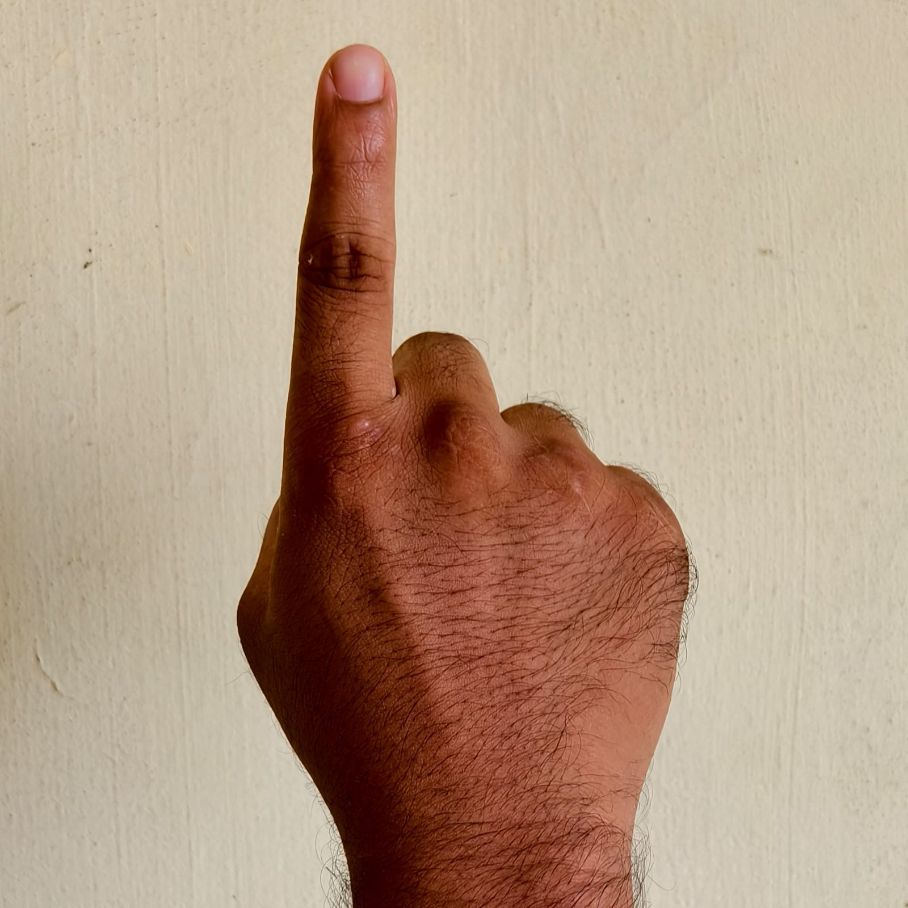
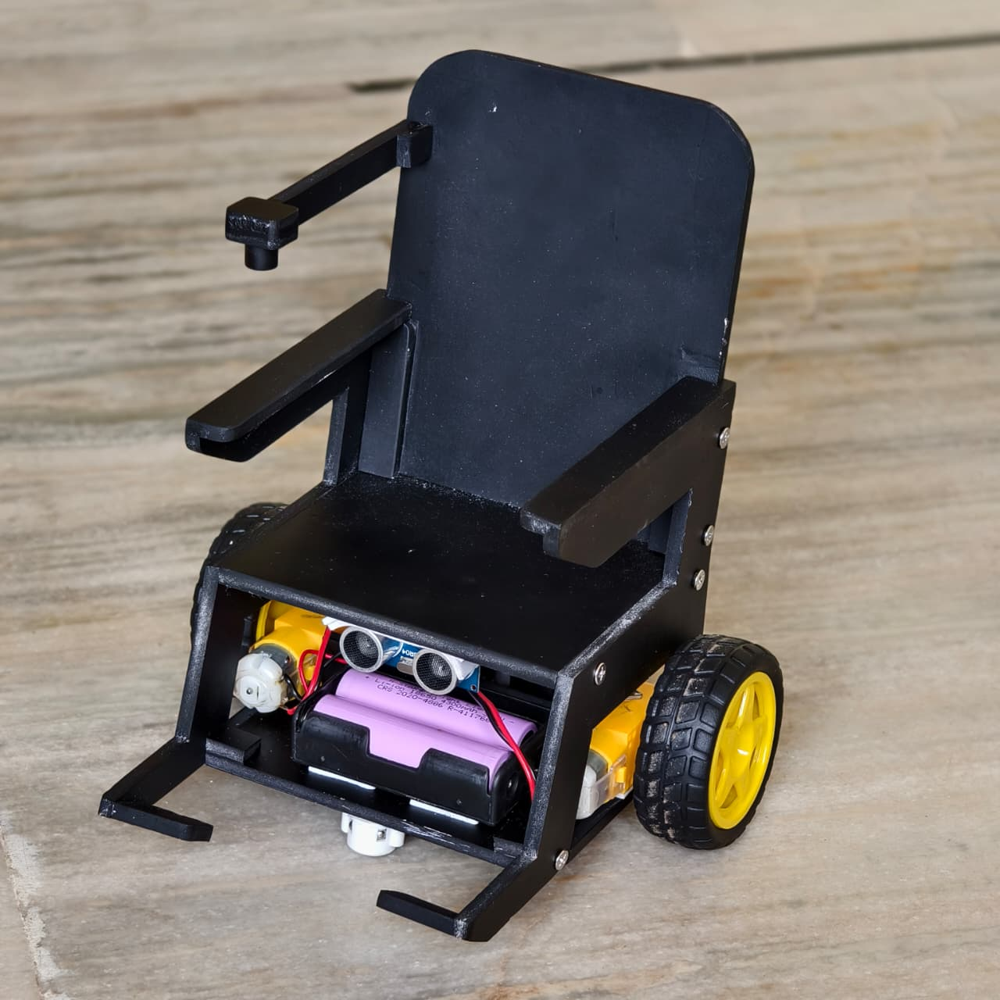
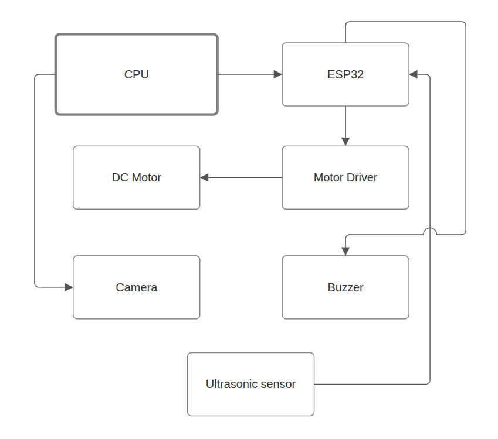
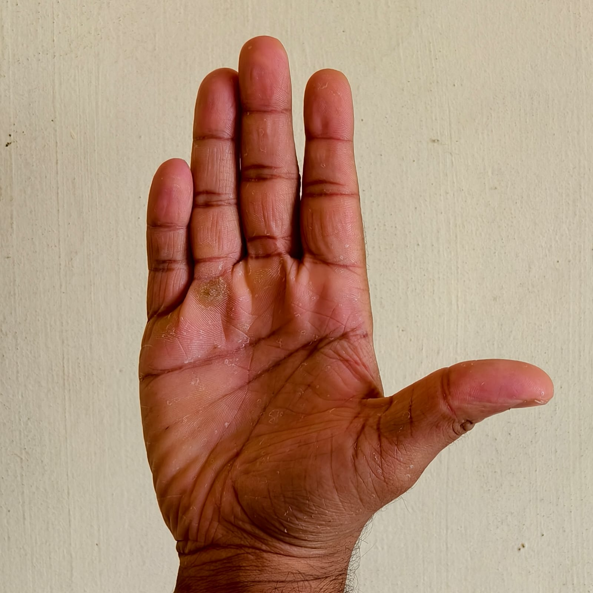
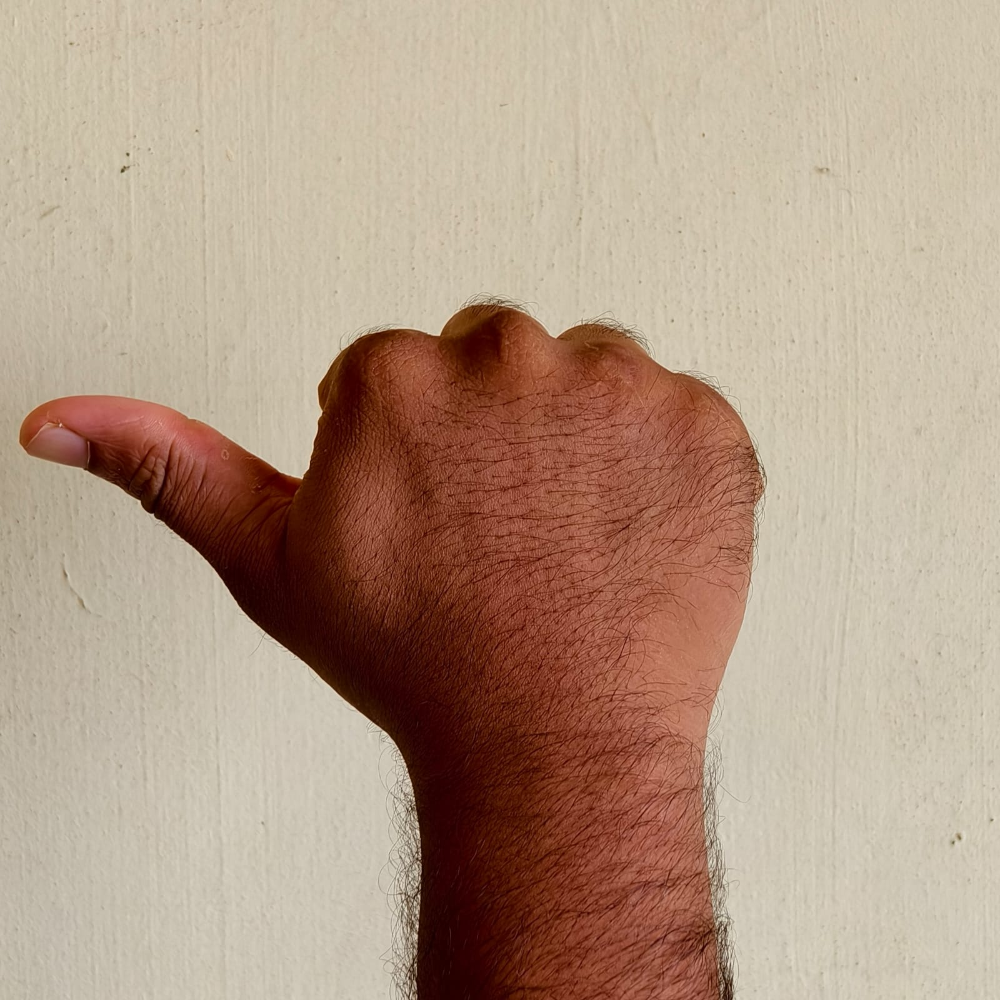
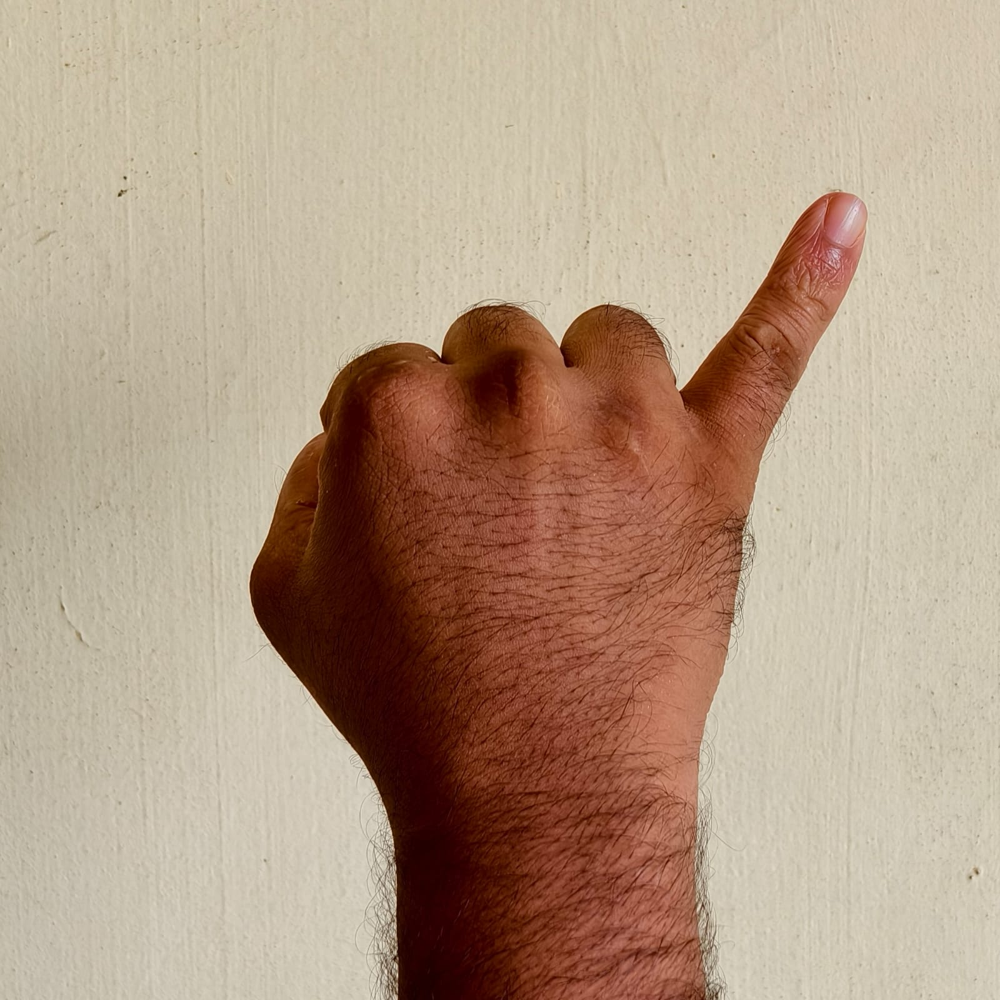
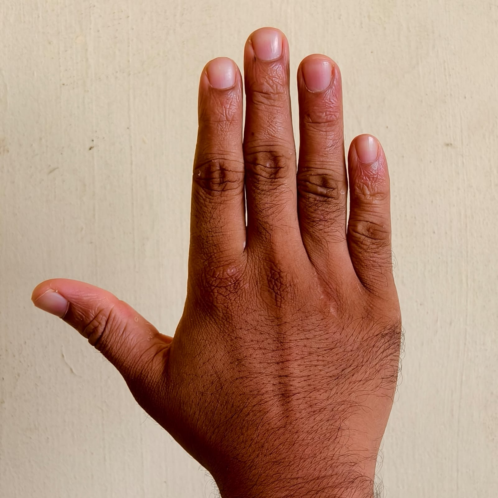
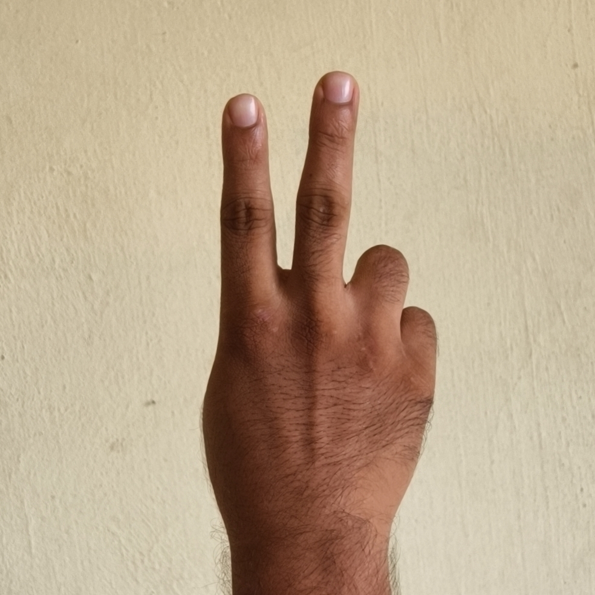
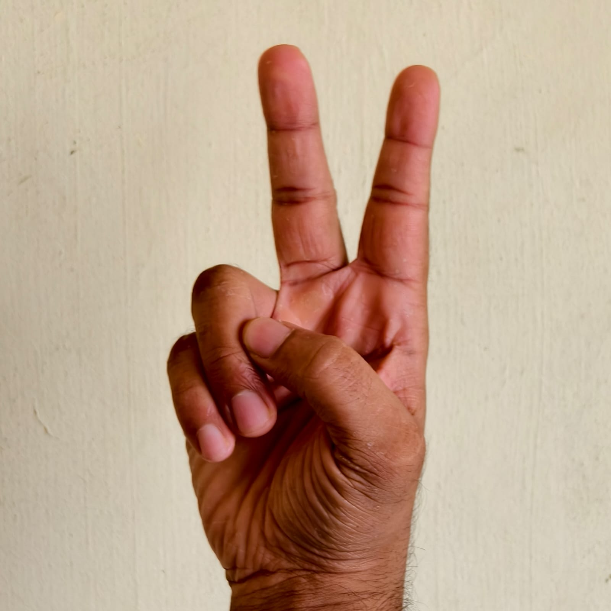

Gesture controlled mobility
Gesture Controlled Wheelchair
A real time vision system that translates hand gestures into safe wheelchair motion. MediaPipe landmarks are scored, stabilized, and forwarded to an ESP32 over Bluetooth with an emergency Telegram alert loop.

ESP32 and MediaPipe in the loop
System layout
The camera streams to the CPU, MediaPipe extracts hand landmarks, and the classifier decides the motion command. ESP32 firmware drives the motors and buzzer while the ultrasonic sensor keeps obstacle clearance in check.
- Landmark scoring with palm orientation checks
- Command stabilization to avoid flicker
- Emergency gesture triggers Telegram alerts
- Failsafe STOP on tracking loss


Gesture map
Each gesture is mapped to a single character command for the ESP32. The classifier blends finger extension and palm orientation for reliable intent recognition.

Backward
Command B
Left
Command L
Right
Command R
Stop
Command S
Horn
Command H
Emergency
Command EPipeline at a glance
The classifier scores finger extension, checks palm orientation, and then smooths predictions over a short history window. This keeps motion stable while still reacting quickly to intent changes.
- Capture camera frame and run MediaPipe inference.
- Compute finger scores and gesture match scores.
- Stabilize commands across recent frames.
- Send the final command to ESP32 over Bluetooth.
Run the project
Install dependencies, pair the ESP32, and launch the main script. If Bluetooth is unavailable, the app continues in demo mode and logs commands to the console.
python -m pip install mediapipe opencv-python pyserial
python main.pyConfigure Telegram alerts by adding values to .env (see the README for details).
How to use
Connect your external webcam, confirm the camera index, and verify Bluetooth pairing before driving the chair.
External webcam setup
- Plug in the USB webcam and confirm it is visible to your OS.
- Update camera_index in
main.py(0 = built-in, 1 = external). - Re-run the app and adjust the index if the preview does not open.
- Pair the ESP32 named ESP32_Wheelchair and update
COM_PORTif needed.
ESP32 pin configuration
- ENA (Left motor speed) → GPIO 26
- IN1 (Left direction) → GPIO 13
- IN2 (Left direction) → GPIO 14
- ENB (Right motor speed) → GPIO 25
- IN3 (Right direction) → GPIO 16
- IN4 (Right direction) → GPIO 27
- Buzzer → GPIO 19
- Ultrasonic TRIG → GPIO 22
- Ultrasonic ECHO → GPIO 23
Upload hardwarecode.ino after wiring, then power the motor driver and sensors.